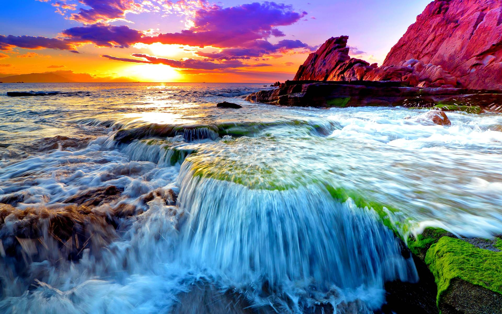
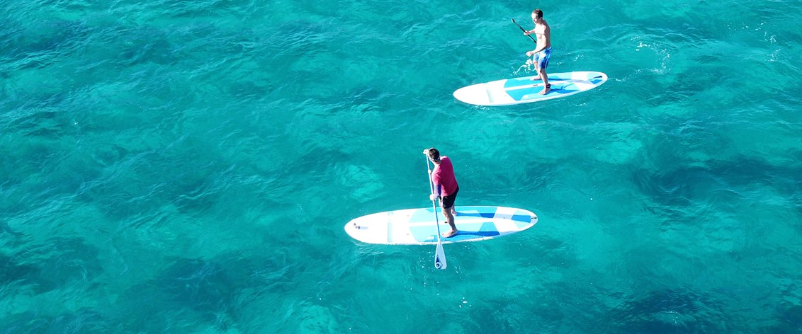

Explore the Beauty of Taniti Island
Taniti Island offers a wide range of attractions that cater to every traveler's preferences. From serene beaches to thrilling water sports, there's something for everyone.
Beaches
Relax on the soft sandy beaches and bask in the warm tropical sun. Enjoy the gentle ocean breeze and turquoise waters.

Water Sports
For adventure enthusiasts, Taniti Island offers an array of water sports like surfing, snorkeling, and scuba diving. Dive into the vibrant underwater world and discover its wonders.
